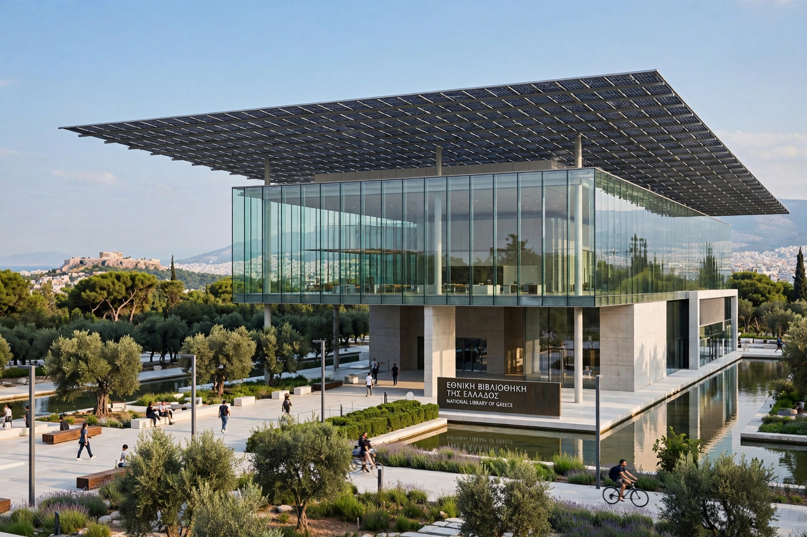

From Wikipedia, the free encyclopedia
| Established | 1829 |
|---|---|
| Location | Stavros Niarchos Foundation Cultural Center, Kallithea, Athens, Greece |
| Collection | Over 2 million volumes; major manuscript collection |
| Legal deposit | Yes |

The National Library of Greece (Greek: Εθνική Βιβλιοθήκη της Ελλάδος) is the national library of Greece, situated since 2018 at the Stavros Niarchos Foundation Cultural Center in Kallithea, near the Faliro Bay Olympic Complex in Athens. Founded in 1829, it is the country's principal research library and legal deposit institution.
The library was founded by Ioannis Kapodistrias, the first governor of Greece, in 1829, with an initial collection assembled by Anthimos Gazis and Andreas Moustoxydis. In 1903 it moved into the neoclassical Vallianeio building on Panepistimiou Street in central Athens — part of architect Theophil Hansen's "Athens Trilogy" alongside the Academy and the University. In 2018 the library relocated to the Stavros Niarchos Foundation Cultural Center, designed by Renzo Piano, in one of the largest library relocations in Europe.
The library holds more than two million volumes and one of the world's significant collections of Greek manuscripts, including some 4,500 Greek manuscripts dating from the 9th to the 19th century, among them the Codex manuscripts, early printed books, and the archive of the Greek War of Independence. It serves as Greece's ISSN and ISBN national centre.